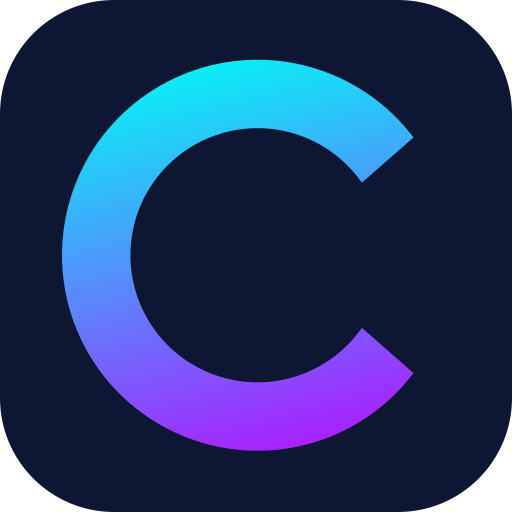

Lis le web en anglais : les mots que tu ne connais pas encore sont surlignés, directement dans Safari.
Recharge les onglets déjà ouverts pour qu’ils soient surlignés.
Active Cymbra Lingua dans les réglages de Safari, section Extensions.
Extension active. Tu peux la désactiver dans les réglages de Safari, section Extensions.
Extension désactivée. Active-la dans les réglages de Safari, section Extensions.
Recharge les onglets déjà ouverts pour qu’ils soient surlignés.